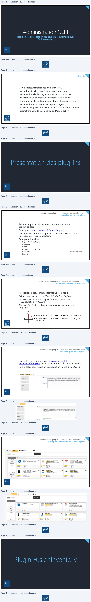
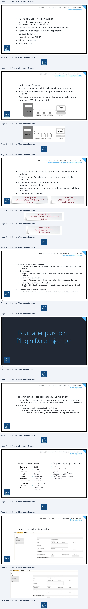
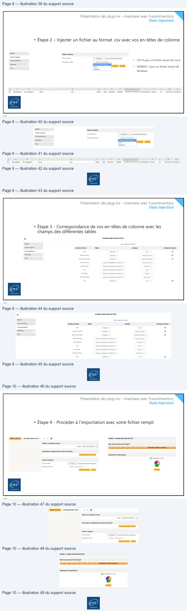

Transcription du document du Drive TSSR. La mise en forme est adaptée au Web ; les compléments IA du portail sont présentés séparément.
Module 06 – Présentation des plug-ins – Inventaire avec
FusionInventory
1
Objectifs
• Comment ajouter/gérer des plugins avec GLPI
• Exploration du site https://plugins.glpi-project.org/
• Comment installer le plugin FusionInventory pour GLPI
• Installation d’un agent FusionInventory sous Windows
• Savoir modifier la configuration de l’agent FusionInventory
• Comment forcer un inventaire depuis un agent
• Installer le plugin Data-Injection en vue d’importer des données
• Paramétrer un modèle d’importation Data-Injection
Présentation des plug-ins – Inventaire avec FusionInventory
2
N
Présentation des plug-ins – Inventaire avec FusionInventory
3
Présentation des plug-ins – Inventaire avec FusionInventory
Les plug-ins : présentation
• Étendre les possibilités de GLPI sans modification du
produit de base
• Catalogue: « https://plugins.glpi-project.org »
* Domaines traités
• Depuis la version 9.5, il est possible d’utiliser le Marketplace
(inscription sur le site obligatoire)
• Principaux domaines :
• Rapports / Graphiques
• Inventaire *
• Réseau
• Gestion administrative
• HelpDesk *
• Import
4
A
Présentation des plug-ins – Inventaire avec FusionInventory
Les plug-ins : installation manuelle
• Récupération des sources au format Gzip ou Bzip2
• Extraction des plug-ins : « GlpiInstallationDir/plugins »
• Installation et activation depuis l’interface graphique :
« Configuration => Plugins »
• Chemin d’accès de configuration du plugin : va dépendre
du plugin
• Une version de plugin pour une version ou plus de GLPI
• La mise à jour de GLPI peut nécessiter une mise à jour
du plugin
5
Présentation des plug-ins – Inventaire avec FusionInventory
Paramétrage du Marketplace
• Inscription gratuite sur le site https://services.glpi-
network.com/register afin de récupérer une clé d’enregistrement
• Puis la coller dans la section Configuration→Générale de GLPI :
6
Présentation des plug-ins – Inventaire avec FusionInventory
Les plug-ins : installation par le Marketplace
Présentation des plug-ins – Inventaire avec FusionInventory
7
Présentation des plug-ins – Inventaire avec FusionInventory
8
Configuration
Plugins » % Marketplace
a
instalé
Découvrir
Marketplace
:
inventaire
.
ActualTime
e
Advanced GLPI dashboards
a
dm
advancedplanning
e
Gestion
‘Ads actual time tracking
for GLPI tasks
ul
(Réseau|(Standard]
Ce plugin débloque les fonctionnatés
TV
Requêtes
SQL pour lestableaux
de bord
avancées
(Vue planification) dans GLPI
Helpdesk
ee
{menu Accueil
> Assistance
> Planning)
28 TICgal
3 TECLIB
28 TECLIS
imp
Airwatch connector
e
A
anonymize
a
S
ApprovalByMail
a
‘Connecteur
pour récupérer les données
(Réseau |(Basic]
Red =
[Réseau |(standera}
GLPI-Network
d'inventaire depuis Airwatch
Æ
hnonymisation
des données
GLPI
Plugin GLPI ApprovalByMail
Rappons
Export
23
Teclib.
Wald
Nou
23 TECUB
2 recu
ene
ene

FusionInventory
Présentation des plug-ins – Inventaire avec FusionInventory
• Plugins dans GLPI => la partie serveur
• Les clients FusionInventory agents :
Windows/Linux/macOS/Android
• Permettre un inventaire automatique des équipements
• Déploiement en mode Push / Pull d’applications
• Collecte de données
• Inventaire distant SNMP
• Découverte réseau
• Wake-on-LAN
9
Présentation des plug-ins – Inventaire avec FusionInventory
FusionInventory : vue d'ensemble
• Modèle client / serveur
• Le client communique à intervalle régulier avec son serveur
• Le serveur peut réveiller le client pour une communication
anticipée
• Données d’inventaire, remontée d’information de collecte, etc.
• Protocole HTTP : documents XML
10
Agent
TEE
=) |=) =
Inventaire
Collecte
Application
Client1
GLPI
Présentation des plug-ins – Inventaire avec FusionInventory
FusionInventory : préparation inventaire
• Nécessité de préparer la partie serveur avant toute importation
de clients
• Comment gérer l’affectation des lieux et entités aux objets
inventoriés ?
• Comment maintenir une relation cohérente
utilisateur <=> ordinateur
• Inventaire automatique par défaut très volumineux => limitation
nécessaire
• Définition d’une liste noire
Dictionnaires
Administration =>
Règles fusion
Administration => Fusion =>
Dictionnaires
Règles
11
FusionInventory : règles
Présentation des plug-ins – Inventaire avec FusionInventory
•
« Règles d’informations d’ordinateur »
• À chaque update, modifier des informations ordinateur en fonction d’information de
collecte
•
« Règles de lieu »
• Permettre l’affectation et modification automatique du lieu des équipements importés
par Fusion
•
« Règles sur l’entité ordinateur »
• Permettre l’affectation et modification automatique de l’entité de rattachement
•
« Règles d’import et de liaison des matériels »
• Liste fixe – Identification précise des machines à mettre à jour ou importer – éviter les
doublons
•
« Matériels ignorés durant l’import »
• Liste des équipements n’ayant pas pu être importés suite à une découverte réseau
12
Présentation des plug-ins – Inventaire avec FusionInventory
13
Data Injection
Présentation des plug-ins – Inventaire avec FusionInventory
• Il permet d’injecter des données depuis un fichier .csv
• Comme dans la création à la main, l’ordre de création est important
• Par exemple, création d’un fabricant, puis d’un composant et enfin l’ordinateur
• Attention :
• Aux droits des utilisateurs qui utilisent l’injection
• Si l’utilisateur n’a pas le droit de créer un composant, il ne sera pas créé
• Si vous utilisez FusionInventory, est-il indispensable d’injecter vos données ?
14
A
Présentation des plug-ins – Inventaire avec FusionInventory
Data Injection
• Ce qu’on peut importer
• Ce qu’on ne peut pas importer
• Logiciel
• Versions de logiciels
• Licences
• Données relations au helpdesk
(catégories, tickets)
• Données relatives à la base de
connaissance
• Ordinateur
• Écran
• Imprimante
• Matériel
réseau
• Téléphone
• Périphériques
• Composants
• Utilisateur
• Groupe
• Entité
• Contrat
• Fournisseur
• Contact
• Informations
financières
• Ports réseau
• Type de cartouche
• Type de
consommable
• Documents
15
Présentation des plug-ins – Inventaire avec FusionInventory
Data Injection
• Étape 1 – La création d'un modèle
16
eni
iow ERE)
ences
+
Qh
TS
Watorique
.
Ente
nate
racine
+ | iO
‘Sous
enthes
Non
j
Reste

Présentation des plug-ins – Inventaire avec FusionInventory
Data Injection
• Étape 2 – Injecter un fichier au format .csv avec vos en-têtes de colonne
•
UTF-8 pour un fichier venant de Linux
•
ISO8859-1 pour un fichier venant de
Windows
17
Présentation des plug-ins – Inventaire avec FusionInventory
Data Injection
• Étape 3 - Correspondance de vos en-têtes de colonne avec les
champs des différentes tables
18
mode
Fichier à injecter
Fier
à injecter
{Choix du ever
Parcourir.
Aucun fichier sélectionné
Correspondances.
Encodage
ou hier
Détection
automatique
=
Historique
2
—
Fle fichier Annuler
Tous
1508859-1
A
8
c
o
E
F
s
4
1
3
k
L
M
N
1)
Nomgabart
Estun gabarit
Nom
Leu
Statut
Type
Fabricant
Modéle
Numérod'nventaire OS architecture Noyau
OS
OS Version OS
edition
8
modèle-GAB-latitude7520
Modèle
Voir un aperçu du fichier
Fleher injecter
En-tete du fichier
Tables
champs
‘Champs de liaison
Correspondances
Nom
Ordinateur
+
Nom
¥
=
Numéro dirventare
Ordnateur
+
Numéro
dinvertare
+
¥
08 Sense Pack
Système dexlotaion deélément +
erie pack +
Présentation des plug-ins – Inventaire avec FusionInventory
Data Injection
• Étape 4 - Procéder à l’importation avec votre fichier rempli
19
Boots injection Importation
du A...
=
Modèle : modéle-GAB-latitude7520
Sear en res enters
Etat d'avancement de l'import
Information complémentaire (Choix du fchier)
caren Re eme
Résultat de l'importation
Fichier
à injecter
Procéder import Annuer
Tormier
